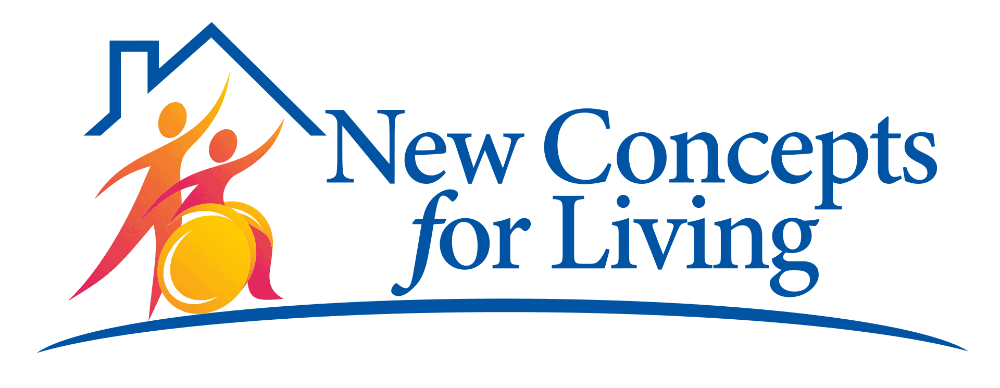
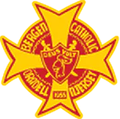

Resume
Work Experience Link to heading
 Meta
Link to heading
Meta
Link to heading
Software Engineer | New York, NY | April 2024 - Present
- Full stack development on Central Product Foundations team
Amount Small Business Link to heading
Lead Software Engineer | New York, NY (Remote) | May 2022 - April 2024
- Lead a team of 3 to 5 backend engineers responsible for delivering core platform features on time
- Architect scalable and high-performance solutions to satisfy business requirements within the scope of Amount’s rapidly evolving white label credit origination platform
- Collaboratively led multiple key technology improvement initiatives, including the migration to using Temporal for workflow orchestration resulting in improved efficiency, visibility, and resiliency
- Serve as the SME for critical microservices written in Java and Go, taking ownership of their design, development, and ongoing enhancements
- Remain involved in hands-on development of these systems when possible
Senior Software Engineer | New York, NY (Remote) | February 2022 - May 2022
- Backend web development using Java and Golang in a microservices architecture
- Integration with AWS services (EC2, ActiveMQ, Redis, Postgres, ElasticSearch)
- Ownership of various platform features from early design phase to production deployments and meeting deadlines and deliverables throughout the process
Software Engineer | New York, NY (Remote) | January 2020 - February 2022
- Backend web development using Java and Golang in a microservices architecture
- Previously worked on a .NET team doing full stack development deployed on Azure infrastructure
Amount Small Business was previously known as Linear Financial Technologies and Fundation Group LLC. Now a part of Amount, my role has been carried through from Fundation, to Linear, to Amount.
 Verisk Analytics
Link to heading
Verisk Analytics
Link to heading
Software Developer | Jersey City, NJ | August 2018 - January 2020
- Full stack web development and batch processing using .NET Framework, .NET Core, AngularJS, and Java
- Integration with AWS services (EC2, Batch, Lambda, SQS, API Gateway, ElasticSearch)
 New Concepts for Living Link to heading
Software Consultant | Rochelle Park, NJ | June 2018 - June 2019
- Full stack web development and batch processing using .NET Core and Angular 7
 United Parcel Service (UPS)
Link to heading
United Parcel Service (UPS)
Link to heading
Human Resources Analytics Co-op | Timonium, MD | September 2017 - January 2018
- Full stack web development using .Net Web Forms
Consumer Technology Quality Assurance Co-op | Parsippany, NJ | July 2017 - September 2017
- Designed and executed test cases for widely used international shipping application
Human Resources Intern | Mahwah, NJ | May 2016 - February 2017
Technical Skills Link to heading
Proficient In: Java (Spring, Micronaut), Golang, C# (.NET), Javascript, SQL, Git
Experience With: AWS, Kubernetes, Jenkins, Python, NoSQL
Interested In: Blockchain, Machine Learning
Education Link to heading
 Loyola University Maryland
Link to heading
Loyola University Maryland
Link to heading
Baltimore, MD | Class of 2018
- Bachelor of Science, Magna Cum Laude, Computer Science
- Minors in Mathematics, Information Systems
- Presidential Scholar
- Upsilon Pi Epsilon (UPE) Computer Science Honor Society
 Bergen Catholic High School Link to heading
Oradell, NJ | Class of 2014
Projects Link to heading
Quantitative Model Validation Link to heading
- Developed web application used to quantitatively validate simulation models using Angular, Python, and Flask.
- Related paper was published at the Summer Simulation Conference in 2018.
- See Research for more information.
[Download Resume PDF]({% link /assets/Michael_Setteducati_Resume.pdf %}){:target="_blank"}